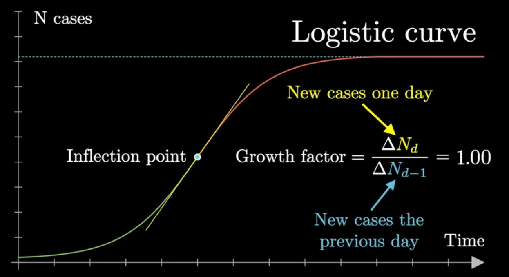
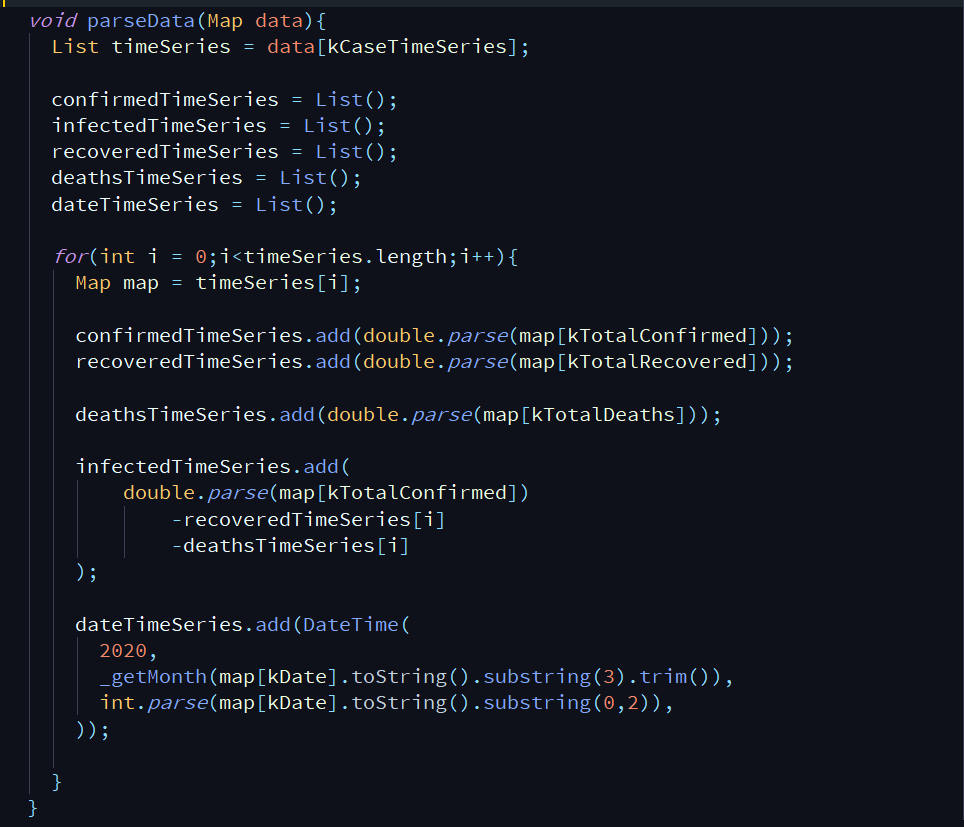
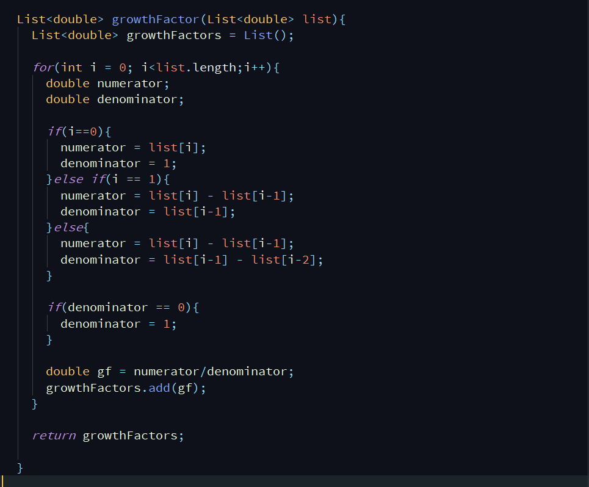
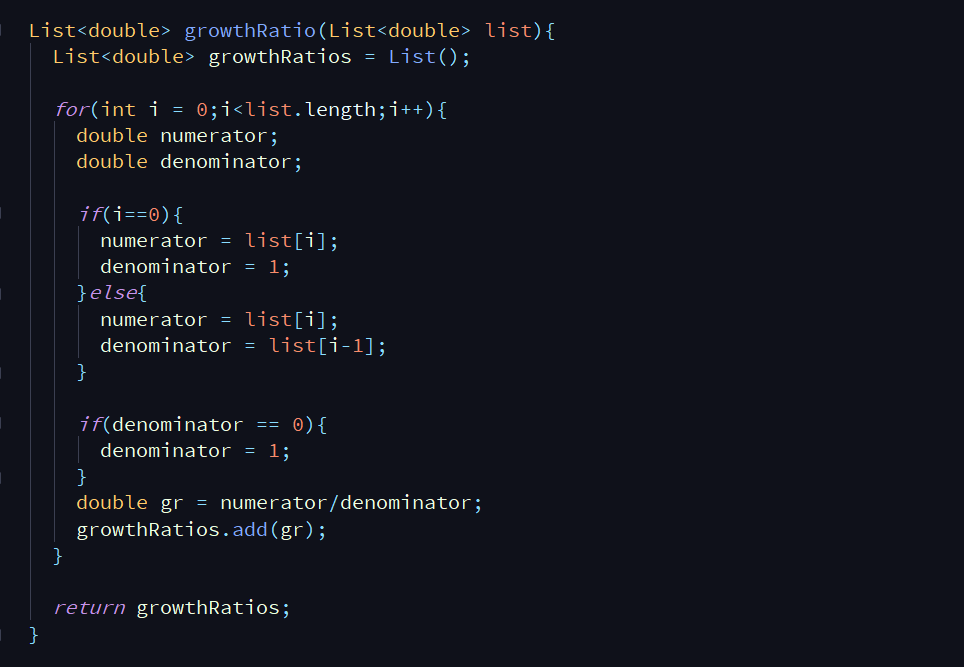
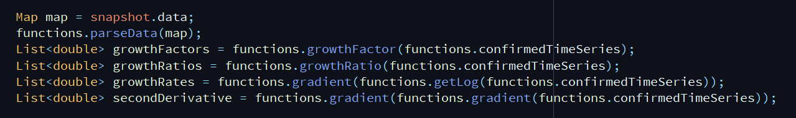

COVID-19 Analysis calculus
Disclaimer
This document demonstrates a very simple mathematical model, a differential equation called the logistic equation which is a special case to Bernoulli equation. The purpose was to illustrate mathematical modeling with simple ordinary differential equations in context to COVID-19 data for my mobile application . I am not a health expert, this document should not be taken too seriously.
The Math: Exponential vs Logistic
The spread of infectious disease can be modeled using a logistic curve rather than an exponential curve. The growth starts exponentially, but must slow down after some point called the inflection point. The inflection point is essentially the midpoint of the spread. We will model the number of confirmed cases using a logistic curve. Let's look at the equation for such a curve, the differential equation for which this curve is a solution, and the graph of the curve.
Logistic curve graph

Logistic function
A logistic function or a logistic curve is an equation of the form
where
- = the inflection point
- = the curves maximum value
- = growth rate or steepness of the curve
Actually, the logistic function is just a solution for the following first-order, non-linear ordinary differential equation called the Logistic Differential Equation where
From the differential equation, stability of solutions and equilibria can be explored. However, this may not be directly helpful in predicting confirmed cases, so let's keep things simple for now and just look at the growth metrics.
The Analysis
Now that we have seen the math, let's explore the following growth metrics for the confirmed cases:
- Growth Factor
- Growth Ratio
- Growth Rate
- Derivative
The on day is the confirmed cases on that day devided by confirmed cases on the previous day.
The on day is the total confirmed cases on that day devided by the total confirmed cases on previous day
The is simply the derivative.
These metrics gives insight into which countries may have already hit inflection points. For example, if a country's growth factor has stabilized around 1.0 then this can be a sign that that country has reached it's inflection point.
If we take our data and take the derivative, basically all it is telling us is whether the cases are growing at an accelerating or decelerating rate. From calculus you may remember we use the derivative test to test for concavity and find inflection points. The inflection point is where the curve changes concavity.
In other words if derivative is negative the derivative that is the growth rate will go down and vice versa.
Data sources
- India - api.covid19india.org/data.json
- Global - covidapi.info/api/v1/country/(ISO3 country code).
For example, for United States covidapi.info/api/v1/country/USA
Importing data
Growth Factor calculations
Growth Ratio calculation
Derivative calculation
The function works same as numpy.gradient() in python.
Execution
Growth rate is defined as in the logistic function presented at the beginning of this document.
INDIA


Author: